<<<<<<< HEAD
<<<<<<< HEAD
Metodo de Euler
<<<<<<< HEAD
<<<<<<< HEAD
<<<<<<< HEAD
<<<<<<< HEAD
=======
>>>>>>> 62bea6a0d0a1d3eca740d93a452697554da972de
=======
>>>>>>> 8ffe51d4bbc8f1e500cc9c435f05cb1c6f0ffef3
=======
>>>>>>> 2f43bff4df7198ad5fd8ebe602c2f00c0d1ecf01
=======
>>>>>>> a89bb6fd5bd3faff679a502c98ff65257591aa83
Aproxime o valor desta integral usando a regra de Simpson para 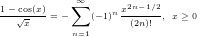,
=======
id="dx83-141001">
Retornemos ao problema de valor inicial (9.1) dado por:
O Método de Euler aplicado à solução desse problema consiste em aproximar
a derivada por um esquema de primeira ordem do tipo
>>>>>>> 8ffe51d4bbc8f1e500cc9c435f05cb1c6f0ffef3
Aqui é o passo do método, que consideraremos uma constante. Assim temos
(9.3) se transforma em:
<<<<<<< HEAD
E 8.4.2.O valor exato da integral imprópria é dado por é dado por 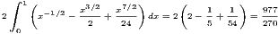>>>>>> 62bea6a0d0a1d3eca740d93a452697554da972de
-π2- " class="math" >.
Escreva esta integral como
e aproxime seu valor usando o esquema de trapézios e Simpson para 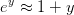,
=======
Definimos, então, e como a aproximação para
produzida pelo Método de Euler. Assim, obtemos
>>>>>>> 8ffe51d4bbc8f1e500cc9c435f05cb1c6f0ffef3
O problema (9.5) consiste em um esquema iterativo, isto é, é a condição
inicial; pode ser obtido de ; , de e assim por diante,
calculamos o termo apartir do anterior .
Exemplo 9.1.1.Retornemos ao o problema de valor inicial do exemplo (9.2):
cujo valor com 10 casas decimais corretas é 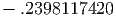.
=======
src="main4041x.png" alt="∫ 1
0 ln (x)sin(x)dx " class="math-display" >
cujo valor com 10 casas decimais corretas é 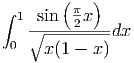.
>>>>>>> 62bea6a0d0a1d3eca740d93a452697554da972de
Aproxime esta integral via Gauss-Legendre com 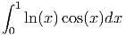,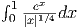,
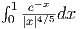, 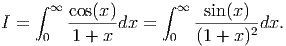, 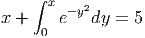 e 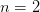.
Use a identidade
e aproxime a integral numericamente via
Gauss-Legendre com , 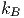, 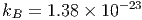, , e
.
Compare os resultados e discuta levando em consideração as respostas às
seguintes perguntas: 1)Qual função é mais bem-comportada na origem?
2)Na segunda formulação, qual porção da solução foi obtida analiticamente
e, portanto, sem erro de truncamento?
Cuja solução é . O método de Euler aplicado a este problema
produz o seguinte esquema:
cuja solução é dada por
>>>>>>> 8ffe51d4bbc8f1e500cc9c435f05cb1c6f0ffef3
Como , a solução aproximada pelo Método de Euler é
Observe que , mas se é pequeno, a aproximação é boa,
pois
Vamos agora, analisar o desempenho do Método de Euler usando um exemplo
mais complicado, porém ainda simples suficiente para que possamos obter a
solução exata:
E 8.4.4.Considere o problema de calcular numericamente a integral
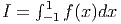 quando quando .
O que acontece quando se aplica diretamente a quadratura gaussiana
com um número impar de abscissas?
Calcule o valor aproximado por quadratura gaussiana com ,
, e .
Calcule o valor aproximado da integral removendo a singularidade
e aplicando quadratura gaussiana com , , e
.
Calcule o valor aproximado da integral removendo a singularidade,
considerando a paridade da função
e aplicando quadratura gaussiana com 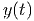, 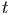, e
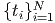.
Expandindo a função 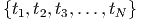 em série de Taylor, truncando a série
depois do 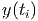-ésimo termos não nulo e integrando analiticamente.
Aproximando a função 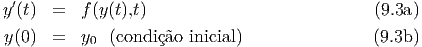 pelo polinômio de Taylor de grau 4 dado
por
e escrevendo
=======
class="ec-lmbx-12">Exemplo 9.1.2. Considere o problema de valor inicial relacionado à equação
logística:
=======
Regras de Newton-Cotes
=======
Exerc<img
src="ec-lmr12-19.png" alt="i" class="12x-x-19" />cios finais
>>>>>>> c2790254e7e5196a945409616a59006dc5a6f1d1
<<<<<<< HEAD
<<<<<<< HEAD
A forma geral de obter regras de integração melhores é usar polinômios com graus
maiores. Utilizando polinômios de Lagrange passando por
obtemos
e
integramos
A
fórmula de quadratura então é
onde
9.2.1 Regra do Trapézio
A regra do trapézio consiste em aproximar a integral por um trapézio em vez de
um retângulo, como fizemos. Para isso, aproximamos por um polinômio de
grau 1, ou seja, uma reta que pode ser obtida através de interpolação de Lagrange
como mostra a figura.
O polinômio de Lagrange que passa por e
é dado por
onde . Podemos integrar a função aproximando-a por esse
polinômio:
Pelo teorema do valor médio, existe tal que
e, portanto,
tal que a regra do trapézio local é dada por
(9.6)
onde o erro local é .
Exemplo 9.2.1.Use a regra do trapézio para aproximar a integral
Depois divida a integral em duas
e aplica a regra do trapézio em cada uma delas. Finalmente, repita o processo
dividindo em quatro integrais.
Usando o intervalo , temos , e . A regra do
trapézio resulta em
Usando dois intervalos, e e usando a regra do trapézio em cada
um dos intervalos, temos:
Agora, usando quatro intervalos, temos
9.2.2 Regra de Simpson
Para aproximarmos por um polinômio de grau precisamos três pontos
do intervalo . Utilizando
com , podemos construir uma parábola através do polinômio de
Lagrange
e integrando temos
onde
Calculando essas integrais obtemos a regra de Simpson
>>>>>>> 2ce5bba22e77a9b0d17e57fb0d2efc8029204145
>>>>>>> 8ffe51d4bbc8f1e500cc9c435f05cb1c6f0ffef3
Podemos obter a solução exata desta equação usando o método de separação
de variáveis e o método das frações parciais. Para tal escrevemos:
O termo pode ser decomposto em frações parciais como e
chegamos na seguinte equação diferencial:
=======
src="main3733x.png" alt="∫ b
f(x)dx = h-(f(x ) + 4f(x ) + f(x )).
a 6 0 1 2
" class="math-display" >
Erro na regra de Simpson
Para aproximarmos por um polinômio de grau precisamos três pontos
do intervalo, como por exemplo,
com . Para isso, o polinômio de Lagrange deve ser uma
parábola:
>>>>>>> 2ce5bba22e77a9b0d17e57fb0d2efc8029204145
Integrando termo-a-termo, temos a seguinte equação algébrica relacionando
e :
Onde é a constante de integração, que é definida pela condição inicial,
isto é, em . Substituindo, temos . O que resulta
em:
Se usarmos o mesma metodologia da regra dos trapézios, teremos
e
obteremos o fórmula de Simpson com um erro de quarta ordem. O fato é que a
regra de Simpson tem ordem cinco e, para isso, usaremos uma abordagem
alternativa. Considere o polinômio de Taylor
onde e integre no intervalo :
>>>>>>> 2ce5bba22e77a9b0d17e57fb0d2efc8029204145
e
=======
src="main3743x.png" alt="∫ b [ 2 ′′
f (x )dx = f(x1 )(x − x1 ) + f ′(x1)(x-−-x1) + f--(x1-)(x − x1)3
a 2 6
f′′′(x ) ]x2
+ -----1-(x − x1 )4
24 x0
1 ∫ x2 (4) 4
+ --- f (ξ(x ))(x − x1) dx,
24 x0
" class="math-display" >
Pelo teorema do valor médio, existe tal que
>>>>>>> 2ce5bba22e77a9b0d17e57fb0d2efc8029204145
Colocando o termo em evidência, encontramos:
(9.7)
E, finalmente, encontramos a solução exata dada por .
Vejamos, agora, o esquema iterativo produzido pelo método de Euler:
Para fins de comparação, calculamos a solução de 9.1.2 e de (??) para alguns
valores de e de passo e resumimos na Tabela 9.1.
Tabela 9.1: Tabela comparativa enter Método de Euler e solução exata para
problema 9.1.2.
No exemplo 9.1.4, mostramos como o Método de Euler pode ser facilmente
estendido para problemas envolvendo sistemas de equações diferenciais..
>>>>>>> 8ffe51d4bbc8f1e500cc9c435f05cb1c6f0ffef3
E 8.4.5.Calcule numericamente o valor das seguintes integrais com um erro
relativo inferior a 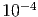.
E 8.4.6.Calcule as integrais e e usando
procedimentos analíticos e numéricos.
E 8.4.7.Use a técnica de integração por partes para obter a seguinte
identidade envolvendo integrais impróprias:
>>>>>> 62bea6a0d0a1d3eca740d93a452697554da972de
I = ------dx = -------2dx.
0 1 + x 0 (1 + x )
" class="math-display" >
Aplique as técnicas estudadas para aproximar o valor de I e explique por
que a integral da direita é mais bem comportada.
=======
class="ec-lmbx-12">Exemplo 9.1.4. Escreva o processo iterativo de Euler para resolver
numericamente o seguinte sistema de equações diferenciais
cuja solução exata é e .
>>>>>>> 8ffe51d4bbc8f1e500cc9c435f05cb1c6f0ffef3
=======
src="main4260x.png" alt="x(t) = cos(t) " class="math" > e .
>>>>>>> 2f43bff4df7198ad5fd8ebe602c2f00c0d1ecf01
Para aplicar o Método de Euler a um sistema, devemos encarar as diversas
incógnitas do sistema como formando um vetor, neste caso, escrevemos:
O
sistema é igualmente escrito na forma vetorial:
>>>>>> 62bea6a0d0a1d3eca740d93a452697554da972de
x + 0 e dy = 5
" class="math-display" >
com 5 dígitos significativos.
Resposta.4.1138
=======
src="main4258x.png" alt="⌊ (k+1) ⌋ ⌊ (k) ⌋ ⌊ (k) ⌋
| x | = | x | + h| − y | .
⌈ y (k+1) ⌉ ⌈ y (k) ⌉ ⌈ x(k) ⌉
=======
src="main4263x.png" alt="⌊ (k+1) ⌋ ⌊ (k) ⌋ ⌊ (k) ⌋
| x | = | x | + h| - y | .
⌈ y (k+1) ⌉ ⌈ y (k) ⌉ ⌈ x(k) ⌉
>>>>>>> 2f43bff4df7198ad5fd8ebe602c2f00c0d1ecf01
=======
src="main4263x.png" alt="⌊ (k+1) ⌋ ⌊ (k) ⌋ ⌊ (k) ⌋
| x | = | x | + h| − y | .
⌈ y (k+1) ⌉ ⌈ y (k) ⌉ ⌈ x(k) ⌉
>>>>>>> a89bb6fd5bd3faff679a502c98ff65257591aa83
" class="math-display" >
Observe que este processo iterativo é equivalente a:
>>>>>>> 8ffe51d4bbc8f1e500cc9c435f05cb1c6f0ffef3
Exemplo 9.1.5.Escreva o problema de valor inicial de segunda ordem dado por
onde é a constante de Avogrado dado por e é a
constante de Boltzmann dada por >>>>>> 62bea6a0d0a1d3eca740d93a452697554da972de
B " class="math" >. é temperatura de
Debye do sólido.
Calcule o calor específico do ferro em quando ,
e supondo .
Calcule a temperatura de Debye de um sólido cujo calor específico a
temperatura de é . Dica: aproxime a integral por
um esquema numérico com um número fixo de pontos.
Melhore sua cultura geral: A lei de Dulong-Petit para o calor específico
dos sólidos precede a teoria de Debye. Verifique que a equação de Debye
é consistente com Dulong-Petit, ou seja:
Dica: use quando
=======
src="main4119x.png" alt=" lim Cv = 3N kB.
T→ ∞
" class="math-display" > Dica: use quando
>>>>>>> 62bea6a0d0a1d3eca740d93a452697554da972de
como um problema envolvendo um sistema de primeira ordem.
>>>>>>> 8ffe51d4bbc8f1e500cc9c435f05cb1c6f0ffef3
A fim de transformar a equação diferencial dada em um sistema de equações
de primeira ordem, introduzimos a substituição , de forma que obteremos
o sistema:
Portanto, o Método de Euler produz o seguinte processo iterativo:
Usando a diferenças finitas centrais para a derivada segunda:
, temos
Pode-se mostrar que é possível escolher que substitua e com a
seguinte estimativa
Exemplo 9.2.2.Use a regra de Simpson para aproximar a integral
Depois divida a integral em duas
e aplica a regra de Simpson em cada uma delas.
Usando o intervalo , temos , , e . A
regra de Simpson resulta em
Usando dois intervalos, e e usando a regra do trapézio em cada
um dos intervalos, temos:
Exercícios
E 9.2.1.Calcule numericamente as seguintes integrais usando os métodos simples
do Ponto médio, Trapézio e Simpson. Calcule também o valor exato usando
seus conhecimentos de Cálculo I. Complete a tabela abaixo conforme
modelo:
=======
E 9.2.5.Use as rotinas construídas em aula e calcule numericamente o valor
das seguintes integrais usando o método composto dos trapézios para os
seguintes números de pontos:
 é dado por
é dado por
 é dado por
é dado por

 por um esquema de primeira ordem do tipo
por um esquema de primeira ordem do tipo

 é o passo do método, que consideraremos uma constante. Assim temos
(9.3) se transforma em:
é o passo do método, que consideraremos uma constante. Assim temos
(9.3) se transforma em:  é dado por
é dado por  é dado por 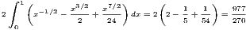>>>>>> 62bea6a0d0a1d3eca740d93a452697554da972de
-π2- " class="math" >.
Escreva esta integral como
é dado por 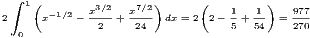>>>>>> 62bea6a0d0a1d3eca740d93a452697554da972de
-π2- " class="math" >.
Escreva esta integral como


 e
e  como a aproximação para
como a aproximação para  produzida pelo Método de Euler. Assim, obtemos
produzida pelo Método de Euler. Assim, obtemos 
 é a condição
inicial;
é a condição
inicial;  pode ser obtido de
pode ser obtido de  ;
;  , de
, de  e assim por diante,
calculamos o termo
e assim por diante,
calculamos o termo  apartir do anterior
apartir do anterior  .
.

![∫ 1 ∫ 1 ∫ 1
ln (x )sin(x)dx = ln(x)xdx + ln(x )[sin(x) - x]dx
0 (0 ) 0|1
x2- x2- || ∫ 1
=======
src=](main3991x.png)
![∫1ln(x) [sin(x) - x]dx
=======
src=](main3992x.png) numericamente via
Gauss-Legendre com
numericamente via
Gauss-Legendre com  , 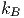, 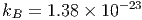,
, 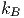, 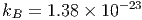,  ,
,  e
e
 .
.
 . O método de Euler aplicado a este problema
produz o seguinte esquema:
. O método de Euler aplicado a este problema
produz o seguinte esquema: 

 , a solução aproximada pelo Método de Euler é
, a solução aproximada pelo Método de Euler é

 , mas se
, mas se  é pequeno, a aproximação é boa,
pois
é pequeno, a aproximação é boa,
pois

 quando
quando  .
.
 ,
,
 ,
,  e
e  .
.

 ,
,  ,
,  e
e
 .
.
 e
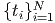.
e
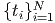.


 obtemos
obtemos

![∫ b ∑n [ ∫ b ] ∫ b∏n
f (x)dx = f (xi) Li(x)dx + ---1---- (x − xi)f(n+1)(ξ(x))dx.
a i=1 a (n + 1 )! a i=1](main3696x.png)


 por um polinômio de
grau 1, ou seja, uma reta que pode ser obtida através de interpolação de Lagrange
como mostra a figura.
por um polinômio de
grau 1, ou seja, uma reta que pode ser obtida através de interpolação de Lagrange
como mostra a figura.

 e
e
 é dado por
é dado por 
 . Podemos integrar a função
. Podemos integrar a função  aproximando-a por esse
polinômio:
aproximando-a por esse
polinômio:

 tal que
tal que  e, portanto,
e, portanto,
![[ ] [ ]
∫ b (x − x0)2 x1 (x − x1)2 x1
f(x)dx ≈ f(x0) --------- − f(x1) ---------
a [ 2h x0 2]h x0
f′′(η) x3 x2 x1
+ ------ ---− ---(x1 + x0) + x0x1x
2 3 2 x0
(x1 − x0)2 (x0 − x1 )2
= f(x0)---------- + f(x1) ----------
′′ ( 23h 2 2h 3 2 )
+ f-(η)- x-1− x1(x + x ) + x x x − x-0+ x0(x + x ) − x x x
2 3 2 1 0 0 1 1 3 2 1 0 0 1 0
2 2
= f(x0)h--+ f(x1)h--
2h 2h
f′′(η)2x31 −-3x21(x1 +-x0) +-6x21x0 −-2x30 +-3x20(x1-+-x0) −-6x1x20
+ 2 6
h f′′(η)( )
= -(f (x0) + f (x1)) +------ x30 − 3x20x1 + 3x21x0 − x31
2 12](main3709x.png)
![[1 1 ] h3f′′(η)
-f (x0 ) +--f(x1) h − --------
2 2 12](main3710x.png)
 .
.


![[0,1]](main3714x.png) , temos
, temos  ,
,  e
e  . A regra do
trapézio resulta em
. A regra do
trapézio resulta em

![[0,1∕2]](main3719x.png) e
e ![[1 ∕2,1 ]](main3720x.png) e usando a regra do trapézio em cada
um dos intervalos, temos:
e usando a regra do trapézio em cada
um dos intervalos, temos: 

 por um polinômio de grau
por um polinômio de grau  precisamos três pontos
do intervalo
precisamos três pontos
do intervalo ![[a,b]](main3725x.png) . Utilizando
. Utilizando

 , podemos construir uma parábola através do polinômio de
Lagrange
, podemos construir uma parábola através do polinômio de
Lagrange


 temos
temos 


 pode ser decomposto em frações parciais como
pode ser decomposto em frações parciais como  e
chegamos na seguinte equação diferencial:
=======
src="main3733x.png" alt="∫ b
f(x)dx = h-(f(x ) + 4f(x ) + f(x )).
a 6 0 1 2
" class="math-display" >
e
chegamos na seguinte equação diferencial:
=======
src="main3733x.png" alt="∫ b
f(x)dx = h-(f(x ) + 4f(x ) + f(x )).
a 6 0 1 2
" class="math-display" > por um polinômio de grau
por um polinômio de grau  precisamos três pontos
do intervalo, como por exemplo,
precisamos três pontos
do intervalo, como por exemplo,

 . Para isso, o polinômio de Lagrange deve ser uma
parábola:
>>>>>>> 2ce5bba22e77a9b0d17e57fb0d2efc8029204145
. Para isso, o polinômio de Lagrange deve ser uma
parábola:
>>>>>>> 2ce5bba22e77a9b0d17e57fb0d2efc8029204145

 e
e  :
:

 é a constante de integração, que é definida pela condição inicial,
isto é,
é a constante de integração, que é definida pela condição inicial,
isto é,  em
em  . Substituindo, temos
. Substituindo, temos  . O que resulta
em:
. O que resulta
em:


 e integre no intervalo
e integre no intervalo ![[a,b] = [x0,x2]](main3742x.png) :
>>>>>>> 2ce5bba22e77a9b0d17e57fb0d2efc8029204145
:
>>>>>>> 2ce5bba22e77a9b0d17e57fb0d2efc8029204145

 tal que
>>>>>>> 2ce5bba22e77a9b0d17e57fb0d2efc8029204145
tal que
>>>>>>> 2ce5bba22e77a9b0d17e57fb0d2efc8029204145

 em evidência, encontramos:
em evidência, encontramos:

 .
.

 e de passo
e de passo  e resumimos na Tabela
e resumimos na Tabela 


 depende explicitamente do
tempo.
depende explicitamente do
tempo.
 .
.
 =======
src="main4253x.png" alt="|--|---------------------|---------------|----------------|
=======
src="main4258x.png" alt="|--|---------------------|---------------|----------------|
>>>>>>> 2f43bff4df7198ad5fd8ebe602c2f00c0d1ecf01
|t | Exato |Euler h = 0,1 |Euler h = 0,01 |
|--|---------------------|---------------|----------------|
|0 | 1 | 1 | 1 |
|--|----−1---------------|---------------|----------------|
|1-|--2e---≈-0,7357589---|---0,6973569----|---0,7320647----|
| | −2 | | |
|2-|2e---+-1-≈-1,2706706-|---1,2431533----|---1,2679593----|
| | −3 | | |
|3-|2e---+-2-≈-2,0995741-----2,0847823--------2,0980818-----
| |
" class="math-display" >
=======
src="main4253x.png" alt="|--|---------------------|---------------|----------------|
=======
src="main4258x.png" alt="|--|---------------------|---------------|----------------|
>>>>>>> 2f43bff4df7198ad5fd8ebe602c2f00c0d1ecf01
|t | Exato |Euler h = 0,1 |Euler h = 0,01 |
|--|---------------------|---------------|----------------|
|0 | 1 | 1 | 1 |
|--|----−1---------------|---------------|----------------|
|1-|--2e---≈-0,7357589---|---0,6973569----|---0,7320647----|
| | −2 | | |
|2-|2e---+-1-≈-1,2706706-|---1,2431533----|---1,2679593----|
| | −3 | | |
|3-|2e---+-2-≈-2,0995741-----2,0847823--------2,0980818-----
| |
" class="math-display" >
 usando
procedimentos analíticos e numéricos.
usando
procedimentos analíticos e numéricos.

 e
e  .
>>>>>>> 2f43bff4df7198ad5fd8ebe602c2f00c0d1ecf01
.
>>>>>>> 2f43bff4df7198ad5fd8ebe602c2f00c0d1ecf01


 é a constante de Avogrado dado por
é a constante de Avogrado dado por  e
e  é a
constante de Boltzmann dada por >>>>>> 62bea6a0d0a1d3eca740d93a452697554da972de
B " class="math" >.
é a
constante de Boltzmann dada por >>>>>> 62bea6a0d0a1d3eca740d93a452697554da972de
B " class="math" >.  é temperatura de
Debye do sólido.
é temperatura de
Debye do sólido.
 ,
,  e
e  supondo
supondo  .
.
 é
é  . Dica: aproxime a integral por
um esquema numérico com um número fixo de pontos.
. Dica: aproxime a integral por
um esquema numérico com um número fixo de pontos.
 quando
quando  >>>>>>> 62bea6a0d0a1d3eca740d93a452697554da972de
>>>>>>> 62bea6a0d0a1d3eca740d93a452697554da972de
 =======
src="main4260x.png" alt=" ′′ ′
=======
src="main4265x.png" alt=" ′′ ′
>>>>>>> 2f43bff4df7198ad5fd8ebe602c2f00c0d1ecf01
=======
src="main4265x.png" alt=" ′′ ′
>>>>>>> a89bb6fd5bd3faff679a502c98ff65257591aa83
y + y + y = cos(t),
y (0 ) = 1,
y′(0 ) = 0,
" class="math-display" >
=======
src="main4260x.png" alt=" ′′ ′
=======
src="main4265x.png" alt=" ′′ ′
>>>>>>> 2f43bff4df7198ad5fd8ebe602c2f00c0d1ecf01
=======
src="main4265x.png" alt=" ′′ ′
>>>>>>> a89bb6fd5bd3faff679a502c98ff65257591aa83
y + y + y = cos(t),
y (0 ) = 1,
y′(0 ) = 0,
" class="math-display" >
 , de forma que obteremos
o sistema:
, de forma que obteremos
o sistema: 


 , temos
, temos 
 que substitua
que substitua  e
e  com a
seguinte estimativa
com a
seguinte estimativa


![[0,1]](main3759x.png) , temos
, temos  ,
,  ,
,  e
e  . A
regra de Simpson resulta em
. A
regra de Simpson resulta em

![[0,1∕2]](main3765x.png) e
e ![[1 ∕2,1 ]](main3766x.png) e usando a regra do trapézio em cada
um dos intervalos, temos:
e usando a regra do trapézio em cada
um dos intervalos, temos:

![|-----|--|∫------2---|∫----------|---∫-------------------|-----∫---−--1----------|
| n |h | 01e−4x dx | 011+1x2dx | 01x4(1 − x)4dx | 01e x2+1dx |
|-----|--|-----------|-----------|-----------------------|-----------------------|
|-17--|--|-0.4409931--|-----------|-----------------------|-----------------------|
| | | | | | |
|-33--|--|-0.4410288--|-----------|-----------------------|-----------------------|
| | | | | | |
|-65--|--|-0.4410377--|-----------|-----------------------|-----------------------|
|129 | | 0.4410400 | | | |
|-----|--|-----------|-----------|-----------------------|-----------------------|
|257 | | 0.4410405 | | | |
|-----|--|-----------|-----------|-----------------------|-----------------------|
|513 | | 0.4410406 | | | |
|-----|--|-----------|-----------|-----------------------|-----------------------|
|1025-|----0.4410407---0.7853981---1.5873015873016--⋅-10−3--4.6191723776309--⋅ 10−1-
| |](main3819x.png)